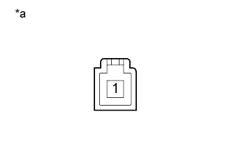

VEHICLE STABILITY CONTROL SYSTEM > Brake Warning Light Remains ON |
| 1.CHECK DTC |
Check for DTCs (Click here).
| Result | Proceed to |
| DTC is not output | A |
| DTC is output | B |
|
| ||||
| A | |
| 2.CHECK CAN COMMUNICATION LINE |
Turn the engine switch off.
Connect the intelligent tester to the DLC3.
Turn the engine switch on (IG).
Turn the intelligent tester on.
Select CAN Bus Check from the System Selection Menu screen and follow the prompts on the screen to inspect the CAN bus (Click here).
|
| ||||
| OK | |
| 3.READ VALUE USING INTELLIGENT TESTER (PARKING BRAKE SW) |
Turn the engine switch off.
Connect the intelligent tester to the DLC3.
Turn the engine switch on (IG).
Turn the intelligent tester on.
Enter the following menus: Chassis / ABS/VSC/TRC / Data List.
| Tester Display | Measurement Item/Range | Normal Condition | Diagnostic Note |
| Parking Brake SW | Parking brake switch/ ON or OFF | ON: Parking brake applied OFF: Parking brake released | - |
Using the intelligent tester, check the input of the switch operation when the parking brake pedal is operated.
|
| ||||
| OK | |
| 4.READ VALUE USING INTELLIGENT TESTER (BRAKE WARNING LIGHT) |
Turn the engine switch off.
Connect the intelligent tester to the DLC3.
Turn the engine switch on (IG).
Turn the intelligent tester on.
Enter the following menus: Chassis / ABS/VSC/TRC / Data List.
| Tester Display | Measurement Item/Range | Normal Condition | Diagnostic Note |
| Brake Warning Light | Brake warning light/ ON or OFF | ON: Warning light on OFF: Warning light off | - |
When performing the Brake Warning Light Active Test, check Brake Warning Light in the Data List (Click here).
| Tester Display | Test Part | Control Range | Diagnostic Note |
| Brake Warning Light | Brake warning light | Warning light ON/OFF | Observe the combination meter. |
| Result | Proceed to | |
| Data List Display | Data List Display when Performing Active Test ON/OFF Operation | |
| ON | Changes between ON and OFF | A |
| Does not change between ON and OFF | B | |
| OFF | Changes between ON and OFF | A |
| Does not change between ON and OFF | B | |
|
| ||||
| A | ||
| ||
| 5.INSPECT PARKING BRAKE SWITCH |
Disconnect the A39 parking brake switch connector.
|  |
Measure the resistance according to the value(s) in the table below.
| Tester Connection | Switch Condition | Specified Condition |
| 1 - Body ground | Parking brake applied (Switch pin not pushed in) | Below 1 Ω |
| Parking brake released (Switch pin pushed in) | 10 kΩ or higher |
| *a | Component without harness connected (Parking Brake Switch) |
|
| ||||
| OK | |
| 6.CHECK HARNESS AND CONNECTOR (PARKING BRAKE SWITCH - MAIN BODY ECU) |
Disconnect the A39 parking brake switch connector.
Remove the main body ECU (multiplex network body ECU) (Click here).
Measure the resistance according to the value(s) in the table below.
| Tester Connection | Condition | Specified Condition |
| A39-1 - A-12 (PKB) | Always | Below 1 Ω |
| A39-1 - Body ground | Always | 10 kΩ or higher |
|
| ||||
| OK | ||
| ||